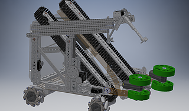

2017-18 Conveyorbot

● Drive Train: Mechanum
We chose Mechanum wheels because we thought they were a happy medium of all the wheels we tested out so far. They're capable of moving in more directions than most wheels, but they were still very durable and easy to control. Mechanum wheels were also quite helpful to move at an angle so that we could pick up glyphs easily, a crucial action that rewarded points in the 2018 game.
● Chasse
The chasse we built was lightweight, strong, and durable. It was similar to the chasse we built for our 2017 robot, and we'll probably continue the design for future seasons of FTC. The chasse we built was made primarily out of the Andymark parts from the FTC Kit of Parts.
● Conyeyor Belt and Glyph Intaker
To grab glyphs, we attached a wheeled intaker to the front of the robot. These wheels suck in the glyphs at a high pressure leading them to the conveyor belts. The conveyor belts which lie on top of a plexiglass angled ramp, move the glyphs to the top of the robot. Then, when we want the glyph to drop into the kryptobox, we stop the conveyor belt and the glyph tips over.
● Relic Claw
The device we used to place the relics is a linear extrusion system laid down horizontally, connected to a simple servo-powered claw.